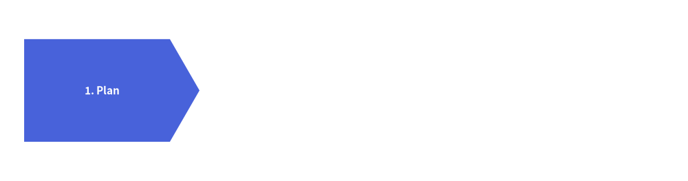
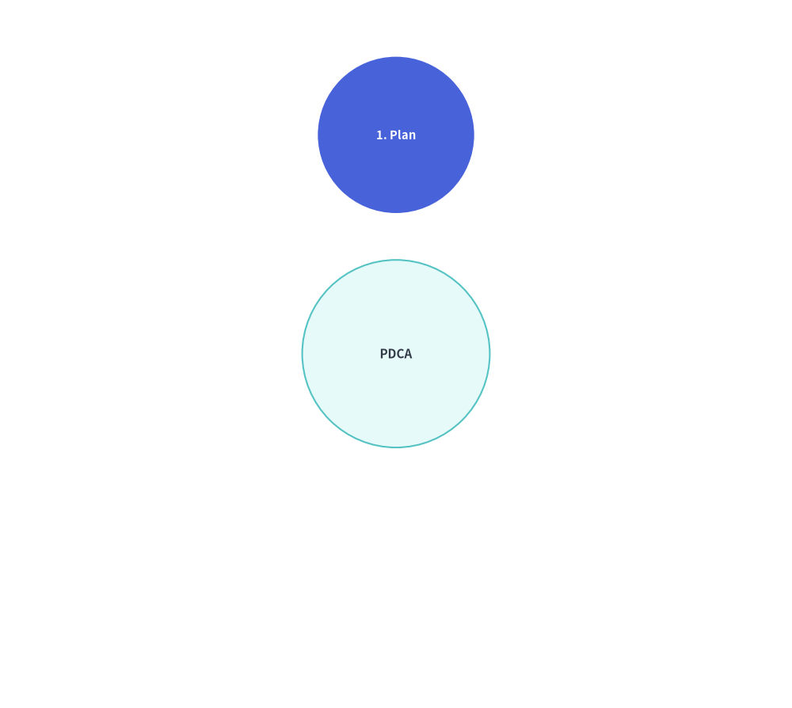
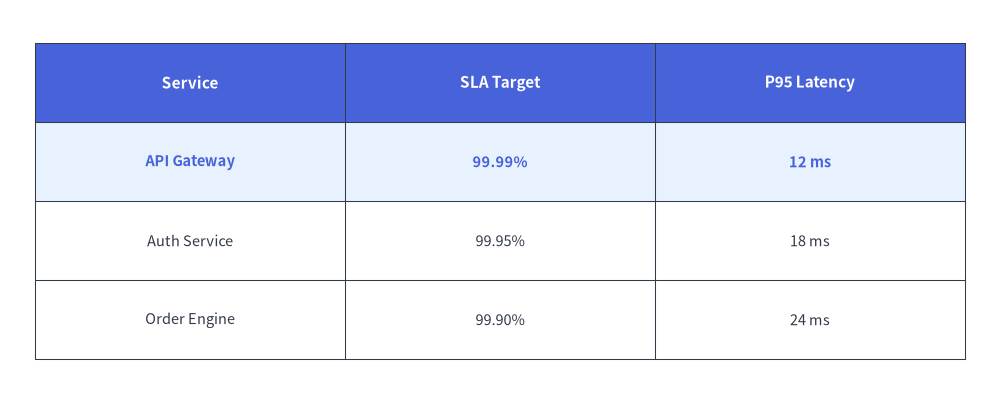

Animating SmartArts
All item-based SmartArt components (ChevronProcess, Cycle, GridLayout, Pyramid, BoxList, BulletPoints, TreeNode, MindMapNode) follow the unified Pre-Build & Mutate lifecycle:
- Instantiate the component and register all items once via
item = comp.add(..., show=...)outside the loop. - Inside
with anim.frame():, mutateitem.show,item.style, oritem.text_style, and callcomp.draw(xy=..., scale=1.0).
1. Mutable Item Classes, item.show = False & Proportional Scaling (scale=1.0)
Every item-based SmartArt returns a mutable item model from .add(..., show=True) (and cycle.center exposes CycleCenter), allowing you to mutate visibility, styles, and text across frames before calling draw(..., scale=1.0) or draw_flexible(..., scale=1.0):
| SmartArt Component | Returned Item Class | Mutable Attributes | Rendering Method & scale Support |
|---|---|---|---|
ChevronProcess |
ChevronItem |
.show, .style, .text_style, .description_style, .text, .description |
draw(xy, width, height, scale=1.0) |
Cycle |
CycleItem, CycleCenter (cycle.center) |
.show, .style, .text_style, .description_style, .arrow_style, .text, .description |
draw(xy, radius, align="center", scale=1.0) |
GridLayout |
GridItem |
.show, .style, .text_style, .text, .position, .width, .height |
draw(xy, width, height, margin, scale=1.0), draw_flexible(..., scale=1.0) |
Pyramid |
PyramidItem |
.show, .style, .text_style, .text |
draw(xy, width, height, margin, scale=1.0), draw_flexible(..., scale=1.0) |
BoxList |
BoxListItem |
.show, .style, .text_style, .text |
draw(xy, box_width, box_height, margin, direction, scale=1.0) |
BulletPoints |
BulletPointItem |
.show, .style (alias for .text_style), .text_style, .text, .indent |
draw(xy, scale=1.0) |
TreeNode |
TreeNode |
.show, .text_style, .line_style, .text |
draw(xy, scale=1.0) |
MindMapNode |
MindMapNode |
.show, .style, .text_style, .line_style, .text |
draw(xy, branch=..., scale=1.0) |
Table |
(Stateful Table) |
reset_styles(), set_style_cell(..., rows=..., columns=...) |
draw(xy, width, height, data, scale=1.0), draw_flexible(..., scale=1.0) |
When item.show = False on any SmartArt item:
- The hidden item still reserves its exact spatial slot (chevron width, orbit angle, grid cell, pyramid tier, or tree row).
- Revealing items step by step via
item.show = (i <= step)never causes already-visible items to jump or resize. - Passing
scale != 1.0todraw(..., scale=s)ordraw_flexible(..., scale=s)uniformly scales all shapes, margins, line widths, and font sizes relative to the anchor coordinatexy.
2. Linear Pipelines & Cycles (ChevronProcess, Cycle)
Build a ChevronProcess or Cycle once outside the loop, keep the list of returned ChevronItem or CycleItem objects (plus cycle.center (CycleCenter) for radial cycles), and mutate .show, .style, and .text_style across frames. In Cycle, hidden steps (item.show = False) preserve their angular orbit positions and automatically hide their outgoing connecting arrows:
from drawlib.anim import Animation
from drawlib.canvas import save, setup
from drawlib.smartarts import ChevronProcess
from drawlib.styles import Styles
setup(width=115, height=34)
anim = Animation(fps=1.5)
proc = ChevronProcess(
style=Styles.Neutral,
text_style=Styles.DarkBold,
description_style=Styles.Dark,
flat_left_end=True,
)
items = [
proc.add("1. Plan"),
proc.add("2. Build"),
proc.add("3. Verify"),
proc.add("4. Deploy"),
]
for step in range(len(items)):
for i, item in enumerate(items):
item.show = (i <= step)
item.style = Styles.PrimaryFlat if i == step else Styles.PrimaryNeutral
item.text_style = Styles.WhiteBold if i == step else Styles.DarkBold
is_last = (step == len(items) - 1)
with anim.frame(duration=2.5 if is_last else 0.8):
proc.draw(xy=(7.5, 9.5), width=100, height=15)
save()

Similarly, for Cycle:
from drawlib.anim import Animation
from drawlib.canvas import save, setup
from drawlib.smartarts import Cycle
from drawlib.styles import Styles
setup(width=76, height=68)
anim = Animation(fps=1.5)
cycle = Cycle(
style=Styles.Neutral,
text_style=Styles.DarkBold.patch(text_size=10.5),
arrow_style=Styles.DarkBold,
node_shape="circle",
node_radius=7.5,
)
cycle.set_center(
text="PDCA",
radius=9.0,
style=Styles.SecondaryNeutral,
text_style=Styles.DarkBold.patch(text_size=11.0),
)
steps = [
cycle.add("1. Plan"),
cycle.add("2. Do"),
cycle.add("3. Check"),
cycle.add("4. Act"),
]
for step_idx in range(len(steps)):
for i, item in enumerate(steps):
item.show = (i <= step_idx)
item.style = Styles.PrimaryFlat if i == step_idx else Styles.PrimaryNeutral
item.text_style = (
Styles.WhiteBold.patch(text_size=10.5) if i == step_idx else Styles.DarkBold.patch(text_size=10.5)
)
is_last = (step_idx == len(steps) - 1)
with anim.frame(duration=2.5 if is_last else 0.8):
cycle.draw(xy=(38.0, 34.0), radius=21.0)
save()

3. Matrix Grids & Tables (GridLayout, Table)
In GridLayout, grid.add((col, row), width, height, ...) returns a mutable GridItem (cell.show, cell.style, cell.text_style). In Table, call table.reset_styles() and table.set_style_cell(..., rows=[active_row]) before table.draw(xy, width, height, data) to sweep row highlights down a matrix:
from drawlib.anim import Animation
from drawlib.canvas import save, setup
from drawlib.smartarts import Table
from drawlib.styles import Colors, Styles
setup(width=115, height=52)
anim = Animation(fps=1.5)
tbl = Table(
cell_style=Styles.White,
text_style=Styles.Dark,
header_cell_style=Styles.PrimaryFlat,
header_text_style=Styles.WhiteBold,
border_style=Styles.DarkThin,
)
data = [
["Service", "SLA Target", "P95 Latency"],
["API Gateway", "99.99%", "12 ms"],
["Auth Service", "99.95%", "18 ms"],
["Order Engine", "99.90%", "24 ms"],
]
for row_idx in [1, 2, 3]:
tbl.reset_styles()
tbl.set_style_cell(
background_color=Colors.Primary1,
text_style=Styles.PrimaryBold,
rows=[row_idx],
)
is_last = (row_idx == 3)
with anim.frame(duration=2.5 if is_last else 0.8):
tbl.draw(xy=(7.5, 44), width=100, height=34, data=data)
save()

4. Hierarchical Trees & MindMaps (TreeNode, MindMapNode)
For TreeNode and MindMapNode, instantiate the hierarchy once outside the loop and mutate .show across frames before calling root.draw(xy=..., scale=1.0):
- Setting
child.show = Falsehides the child label, the incoming branch line from its parent, and its entire subtree, while preserving the exact vertical Y-coordinates of all subsequent sibling nodes:
from drawlib.anim import Animation
from drawlib.canvas import save, setup
from drawlib.icons import phosphor
from drawlib.smartarts import TreeNode
from drawlib.styles import Styles
setup(width=100, height=56)
anim = Animation(fps=1.5)
TreeNode.register_drawing_item(
name="folder", location="before", padding_width=4.0, function=phosphor.folder,
style=Styles.PrimaryFlat, args={"width": 3.0},
)
TreeNode.register_drawing_item(
name="file", location="before", padding_width=4.0, function=phosphor.file_text,
style=Styles.Dark, args={"width": 3.0},
)
n_api = TreeNode("api.py", show=False).set_drawing_item("file")
n_auth = TreeNode("auth.py", show=False).set_drawing_item("file")
n_services = TreeNode("services/", children=[n_api, n_auth], show=False).set_drawing_item("folder")
n_main = TreeNode("main.py", show=False).set_drawing_item("file")
root = TreeNode(
"src/",
text_style=Styles.DarkBold,
line_style=Styles.DarkThin,
line_horizontal_margin=3.0,
line_horizontal_length=3.0,
line_vertical_margin=6.0,
children=[n_services, n_main],
).set_drawing_item("folder")
steps = [
(False, False, False, False),
(True, False, False, False),
(True, True, True, False),
(True, True, True, True),
]
for idx, (s_svc, s_api, s_auth, s_main) in enumerate(steps):
n_services.show = s_svc
n_api.show = s_api
n_auth.show = s_auth
n_main.show = s_main
is_last = (idx == len(steps) - 1)
with anim.frame(duration=2.5 if is_last else 0.8):
root.draw(xy=(22, 48))
save()